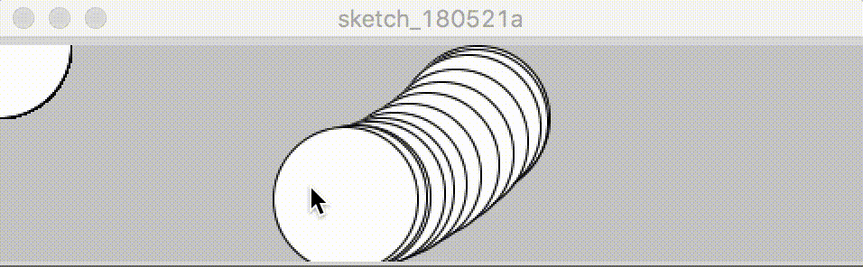

Animating the Ellipse
Click the RUN button in the Tool Bar and...Voilá!
If you move your mouse over the pop-up screen,you
should be able to animate the ellipse like below.
|  |
This program creates a window that is 480 px wide and
120 px high. It draws white circles at the position of
the mouse and when a mouse button is pressed, the circle
color changes to black.
Click on the STOP button in the Tool Bar to halt the sketch.
Interested in more tutorials?
Check out the official Processing Tutorials page.